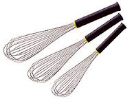

Cul de poule
Le cul de poule est un récipient généralement en inox. Il a la forme d'un saladier avec un fond arrondi. Il est utilisé dans la confection de toutes les préparations à mélanger en cuisine et en pâtisserie. Il peut aussi être en aluminium ou en laiton
Russe
Une russe est le nom donné par les professionnels de la restauration à la casserole traditionnelle des ménagères. C'est une casserole ronde avec des bords droits et hauts.Une casserole a un bec verseur à la différence d'une russe qui n'en a pas.L’origine de cette appellation vient peut-être du fait que chaque « russe » en fonction de sa taille peut s’empiler telle une poupée russe

Fouet
Le fouet est un ustensile de cuisine servant à battre ou mélanger une préparation en incorporant de l'air.Il est indispensable dans la préparation de la crème chantilly, des blancs en neige, des mousses ou du sabayon.
Eminceur
Un éminceur est un couteau à lame épaisse, rigide et haute. Il est utilisé en cuisine, pour la découpe, avec un mouvement de levier de haut en bas et d'arrière en avant, la pointe de la lame restant au contact de la surface de travail.
Couteau d'office
Petit couteau de cuisine polyvalent (de 8 à 12 cm) à lame épaisse et très pointue.Le couteau d’office est également idéal pour équeuter les fraises ou retirer le cœur des pommes
spatule
Il existe aussi une petite palette en plastique, sans manche et en forme de demi-cercle légèrement incurvé, qui a le même usage et qui s'appelle une corne ou racle-tout. Cet ustensile est surtout utilisé en boulangerie-pâtisserie.Les spatules au bout d'un manche, appelées lèche-tout ou maryse, sont soit en caoutchouc (qui a l'inconvénient de se dessécher), soit en silicone. Il existe aussi des versions tout en plastique souple, faites donc en un seul morceau.